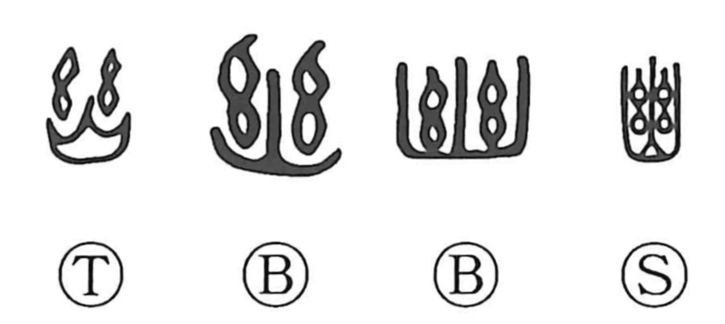

幽

Kun: | On: yuu
secluded ・ hidden ・ faint ・ dark ・ deep
Explanation
In early forms the character brings together the thread-bundle element (written as 丝, representing rows of twisted strands, the sign yō) with the fire graph 火. Threads exposed to flame smoke and darken, an image of being scorched and blackened. From this visual core the word comes to evoke deep, shadowed gloom and, by extension, the qualities of dimness and subtlety—what is faint, delicate, and profound. Hence its use for senses such as “faint,” “deep,” and “dark,” and in compounds like yūshū, which suggests being shut away (yūhei) in a place of deep darkness.